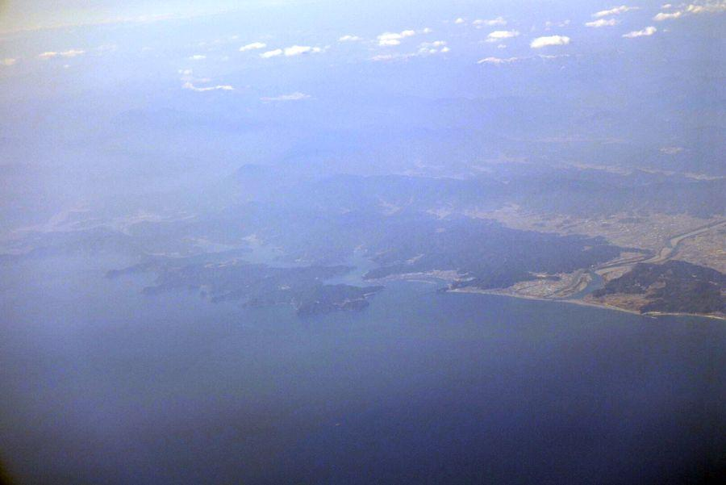
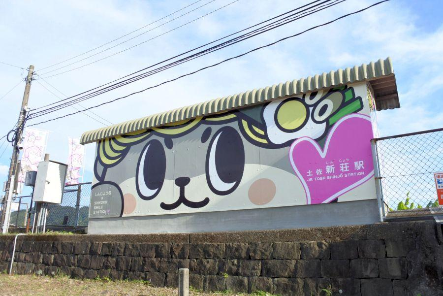

縁結びにゆかりある、海から上陸する神社 < 鳴無神社 / 高知県須崎市 >
海へ続く参道と穏やかな海。
荒々しい太平洋に面した土佐にあって、こちらの海は穏やか。「土佐の宮島」と呼ばれる神社が高知県にあります。昨今、日本では新たに令和時代が始まりましたが、新時代の象徴である徳仁天皇陛下ゆかりの場所の一つとして、これから脚光を浴びることになるかもしれません。
対岸から見える鳥居
高知県須崎市・浦ノ内湾(うらのうちわん)。
その神社は、横浪半島に遮られた穏やかな内湾の 一番奥まった部分に位置。対岸から道路沿いから、紅い鳥居を眺めることができます。
「鳴無神社」の看板のところを曲がって、県道から分岐。
鳴無は「おとなし」と読みます。
海と防波堤沿いの道路を進むと、遠くから見えていた赤い鳥居に到着。ここまでほぼほぼ自家用車かバイク・自転車でのアクセスになると思いますが、車両はこの鳥居手前の広い部分に停車するよう案内があります。
海へ延びる参道
赤い鳥居をくぐると、右手に鳴無神社境内。左手に防潮扉と 海のすぐそばに鳥居が立っています。
近付いてみると、
港のような、参道のような...
そのどちらも正解です。
鳴無神社の参道は「海」
都を逃れこの場所に流れ着いた一言主命(ひとことぬしのみこと)が上陸した経緯に従って、当社の正規参道は海から上陸する形になっています。
今回は自家用車で訪問しましたが、正期順路を重んじて 海から上陸する想定で、この場所から参道を進みます。
土佐始まりの地？ 鳴無神社
鳴無神社(おとなしじんじゃ / 高知県須崎市)
祭神は一言主命(ひとことぬしのみこと)、又の名を味鋤高彦根神(あじすきたかひこねのかみ)と呼ぶ。これは土佐一宮・土佐神社(高知市)と同じ。
社伝によると、第21代雄略天皇との争いから逃れ 海に逃れた一言主命が流れ着いたのがこの場所。都の左に位置することから「都左」「土左」(いずれも読みは「とさ」)と呼んだ。
その後 より良い地を求めて占いを行ったところ、石を投げて落下した地が新たな居住地と定まった。その場所が現在の土佐神社であり、落下してその場所に鎮まった石が「礫石(つぶていし)」として祀られている。
その説を拠り所とすると、当地が「土佐命名の地」であり、旧縣社から引き継いだ格式を持つ「土佐神社奥の院」とも言える。
土佐山内家による再建
手水舎(ちょうずしゃ、てみずや)
藩政時代の土佐大名家・山内家の家紋「丸三葉柏紋(まるにみつばかしわもん)」があしらわれています。
現社殿は土佐山内家第二代藩主・山内忠義(やまうちただよし)公の寄進によって再建されたもの。藩政権としても重要視していたことがわかります。
本堂の脇には井戸があります。池や川が無い土地柄、真水の出る井戸は大変貴重だったことでしょう。往来する船にとっても、ありがたい給水所にあったに違いありません。
独特の習わしと、縁結びエピソード
鳴無神社独特の習わしの一つに「流しみくじ」があります。
授かった御神籤(おみくじ)の内容を読んだ後は、参道先の海に流すのが 当社の習わし。願いを込めておみくじを流しましょう。
様々な縁結びにご利益あり。とされる鳴無神社ですが、近年では皇太子さまと小和田雅子さん(現 第126代徳仁天皇陛下と皇后雅子さま)が結ばれたエピソードが伝わります。お二人のご成婚を願う宮内庁の側近が 鳴無神社で縁結びの祈願を行ったところ、お二人が結ばれました。それによって日本国民は幸せな気持ちになり、大きな安堵を得たことは記憶に新しいところです。
船で訪問することも可能
令和の現代、船での上陸参拝が可能かどうか...
可能です！
浦ノ内湾を航行する巡航船に乗船すれば、船でこの場所まで来ることが可能。
船着場「鳴無」は 鳴無神社参道から僅かに離れているので、こちらに上陸された場合は 徒歩で海からの参道に向かいましょう。
鳴無神社
< 自家用車 >
高松駅から 約2時間20分、170km
高知龍馬空港から 約1時間10分、49km
※ 主な地点からの最速・最短距離
関連記事

2018,2/17 空から見る高知県 < 高知県西部・中部 >

2018,6/29 ゆるキャラ・しんじょう君が地域おこし。駅リニューアル。 < 土佐新荘駅 / 高知県須崎市 >